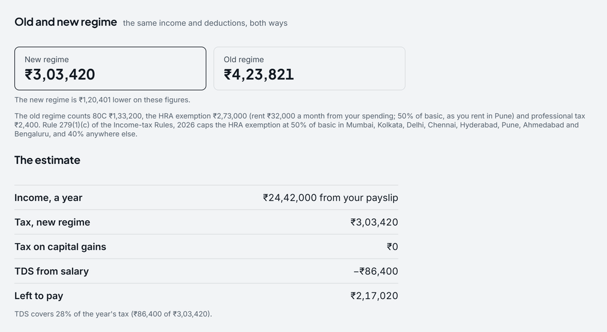

HRA exemption, worked through
- Category
- Tax · FY 2026-27
- By
- Reviewed
- Read
- 7 min
The rule
The HRA of an employee who pays rent for the home they live in is exempt up to the least of three figures for the year:
- the HRA actually received;
- the rent actually paid, less 10% of salary;
- 50% of salary where the home is in Mumbai, Kolkata, Delhi, Chennai, Hyderabad, Pune, Ahmedabad and Bengaluru, and 40% anywhere else.
The eight cities are those of rule 279(1)(c) of the Income-tax Rules, 2026, which apply from FY 2026-27. Until FY 2025-26 only Delhi, Mumbai, Kolkata and Chennai took 50% (rule 2A of the Income-tax Rules, 1962). The rule's column is the location of the home, so it is where you live, not where you work. "Salary" here is basic pay, plus dearness allowance where it counts towards retirement benefits, plus any commission paid as a fixed share of turnover. For most private-sector payslips it is the basic. The HRA left over is taxed as salary. The examples here are in Mumbai, which takes 50%, and Jaipur, which takes 40%.
The new regime allows no HRA exemption at all: there the whole HRA is taxed.
A worked example
A salary of ₹1,50,000 a month in Mumbai: basic ₹60,000, HRA ₹30,000, other allowances ₹60,000. The rent is ₹35,000 a month, ₹4,20,000 for the year.
- HRA received₹30,000 × 12₹3,60,000
- Rent paid less 10% of basic₹4,20,000 − 10% of ₹7,20,000₹3,48,000
- 50% of basic (Mumbai)50% of ₹7,20,000₹3,60,000
- Exempt: the least of the three₹3,48,000
- HRA taxed as salary₹3,60,000 − ₹3,48,000₹12,000
Here the rent less 10% of basic is the least of the three, so ₹3,48,000 is exempt and ₹12,000 of the HRA is taxed.
The same pay in a city that takes 40%
The same salary and the same rent in Jaipur, where the third limit is 40% of basic:
- HRA received₹30,000 × 12₹3,60,000
- Rent paid less 10% of basic₹4,20,000 − 10% of ₹7,20,000₹3,48,000
- 40% of basic (Jaipur)40% of ₹7,20,000₹2,88,000
- Exempt: the least of the three₹2,88,000
- HRA taxed as salary₹3,60,000 − ₹2,88,000₹72,000
Now 40% of basic is the least: ₹2,88,000 is exempt, ₹60,000 less than in Mumbai on the same pay and rent.
How the rent changes it
For the same pay (basic ₹7,20,000, HRA ₹3,60,000 a year), the exemption at different rents:
| Rent a month | Rent less 10% of basic, a year | Exempt at 50% | Exempt at 40% |
|---|---|---|---|
| ₹5,000 | ₹0 | ₹0 | ₹0 |
| ₹15,000 | ₹1,08,000 | ₹1,08,000 | ₹1,08,000 |
| ₹25,000 | ₹2,28,000 | ₹2,28,000 | ₹2,28,000 |
| ₹35,000 | ₹3,48,000 | ₹3,48,000 | ₹2,88,000 |
| ₹45,000 | ₹4,68,000 | ₹3,60,000 | ₹2,88,000 |
A rent of up to ₹6,000 a month, 10% of basic, exempts nothing. Above it, each rupee of rent exempts a rupee of HRA until the rent reaches ₹36,000 a month in Mumbai and ₹30,000 in Jaipur. From there the HRA received or the share of basic is the least of the three, and more rent exempts no more.
What it does to the year's tax
The Mumbai salary of ₹18,00,000 a year, with ₹1,50,000 of 80C, in the old regime without and with the exemption of ₹3,48,000, and in the new regime, which allows neither:
| Old, no HRA | Old, with HRA | New regime | |
|---|---|---|---|
| Salary | ₹18,00,000 | ₹18,00,000 | ₹18,00,000 |
| Standard deduction | −₹50,000 | −₹50,000 | −₹75,000 |
| HRA exemption | not claimed | −₹3,48,000 | not allowed |
| 80C | −₹1,50,000 | −₹1,50,000 | not allowed |
| Taxable income | ₹16,00,000 | ₹12,52,000 | ₹17,25,000 |
| Tax on the slabs | ₹2,92,500 | ₹1,88,100 | ₹1,45,000 |
| Cess, 4% | ₹11,700.00 | ₹7,524.00 | ₹5,800.00 |
| Tax for the year | ₹3,04,200 | ₹1,95,624 | ₹1,50,800 |
The exemption lowers the old regime's tax by ₹1,08,576, because every rupee of it came off income taxed at 30%, plus 4% cess. On these figures the new regime is still lower, ₹1,50,800 against the old regime's ₹1,95,624 with the exemption: ₹44,824 lower. The old vs new regime guide works through where the old regime's deductions start to cost less.
Rent, records and the year
- Period by period. The three limits are worked out for the months the rent was paid and the HRA was received. Where pay or rent changed during the year, each period is worked out on its own and the results added. That can differ from working it out on the year's totals.
- Proof for the employer. Employers ask for proof of the rent, such as receipts and the landlord's PAN, before they leave the exemption out of the tax they deduct. From FY 2026-27 the declaration also asks how the tenant is related to the landlord (Income-tax Rules, 2026).
- No rent, no exemption. Someone living in a home they own, or rent-free, has none, whatever the HRA.
- Missed by the employer. An exemption not given through the employer's TDS can still be claimed in the old-regime return.
How Pocket works it out
Pocket's Tax page works the exemption out with the same rule.
It uses the basic and the HRA on your payslip (the Income tab of Cash flow) and the rent it finds in your spending. It counts entries that say "rent", averaged over the last three months that had one. It shows the result in the old regime's working ("the HRA exemption … rent a month from your spending"), and the new regime without it. Settings has "The city you rent in", with the eight cities, "Somewhere else" and "Not said". Tax works 50% of basic for one of the eight and 40% for the others. When no city is said it works 40% and says that no city is set. For someone in one of the eight cities that makes the exemption lower than the rule's: ₹2,88,000 against ₹3,48,000 in the Mumbai example. It is a planning estimate, not a tax return: the Income Tax Department and a chartered accountant have the final word.

- Both regimes on the same income and deductions, the lower one outlined.
- The estimate in five lines: income, tax, TDS and what is left to pay.
Questions
Is HRA exempt in the new tax regime?
No. The new regime does not allow the HRA exemption, so the whole HRA is taxed as salary there. The exemption is an old-regime rule.
How is the HRA exemption worked out?
It is the least of three figures for the year: the HRA received, the rent paid less 10% of basic salary, and 50% of basic in a city that takes 50% (40% elsewhere). With a basic of ₹60,000 a month, an HRA of ₹30,000 and a rent of ₹35,000 in Mumbai, that is ₹3,48,000 a year.
Which cities take 50% of basic from FY 2026-27?
Mumbai, Kolkata, Delhi, Chennai, Hyderabad, Pune, Ahmedabad and Bengaluru, under the Income-tax Rules, 2026. Until FY 2025-26 only Delhi, Mumbai, Kolkata and Chennai did. Every other city takes 40%.
What if the rent is less than 10% of basic?
Then the second limit is nil, so nothing is exempt. On a basic of ₹60,000 a month, a rent of ₹5,000 a month exempts nothing.
Sources
- Income Tax Department: the Acts, rules, circulars and its own tax calculator, at incometaxindia.gov.in
- Income-tax Act, 2025, which replaces the Income-tax Act, 1961 from 1 April 2026 (FY 2026-27); the 1961 Act's section numbers are given too, as most forms and payslips still use them
- Finance Act, 2025: the new regime's slabs and the ₹12 lakh rebate, from FY 2025-26; and Finance Act, 2026 (Budget 2026), which left the slabs, the rebate and the surcharge as they were for FY 2026-27
- Income-tax Act, 1961, section 10(13A), and rule 2A of the Income-tax Rules, 1962: the three limits, to FY 2025-26
- Income-tax Rules, 2026, rule 279(1)(c) (G.S.R. 198(E), CBDT, notified 20 March 2026, in force 1 April 2026): the eight cities that take 50% of basic, and the declaration to the employer, from FY 2026-27
Previous guide: A budget app that never asks for your bank login